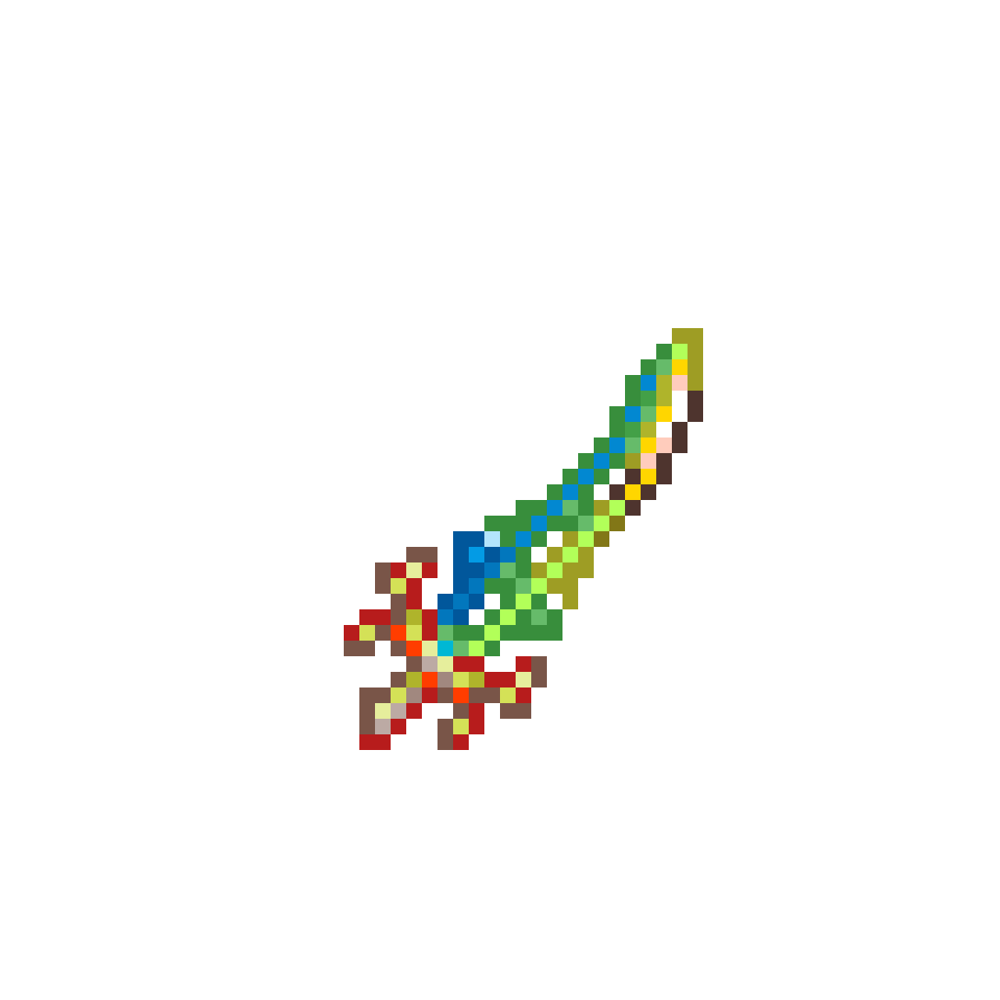

Terrablade
The Terra Blade is a Hardmode projectile sword. When used, it fires a green wave projectile / a green sword projectile , which costs neither mana nor ammunition, deals 50% / 25% more damage than the sword, and can pierce through two enemies, dissipating after hitting a third enemy or a wall. The projectile is affected by Attack speed, it fires once every time the Terra Blade is swung. The projectile can travel up to 5000 feet (2500 tiles) at a speed of 61 mph during the pre-1.4.4 era, but now seems to have a much lesser range post-1.4.4, on around the vicinity of 500 feet (250 tiles). The projectile gradually decelerates, and eventually comes to a full stop where it fades away